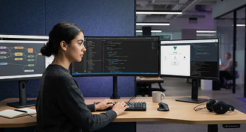

Técnico Oficial · Habilitação MECTécnico em Desenvolvimento de Sistemas
1000h · Híbrido · Sistemas
Ver detalhes
Cursos Técnicos Oficiais
Habilitações técnicas formais de nível médio que combinam a força conceitual da universidade ao treinamento pragmático industrial. Conquiste empregabilidade acelerada com validade profissional em todo o território nacional.
Programas ativos de nível técnico

Técnico Oficial · Habilitação MEC1000h · Híbrido · Sistemas
Ver detalhes Técnico Oficial · Habilitação MEC
Técnico Oficial · Habilitação MEC1000h · Híbrido · Redes
Ver detalhes Técnico Oficial · Habilitação MEC
Técnico Oficial · Habilitação MEC1200h · Presencial / EAD · Sistemas
Ver detalhesPor que escolher a UISE?